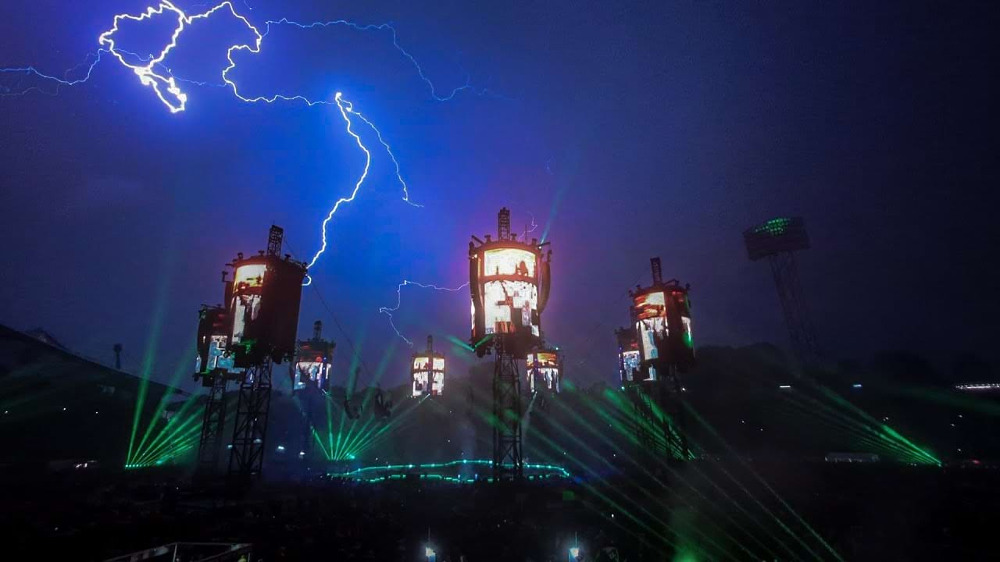

Metallica'nın Münih'teki konserinde yıldırım çarptı
24 Mayıs 2024'te Metallica'nın Münih'teki Olympiastadion'da verdiği konser sırasında bir fırtına, grubun "Master of Puppets" şarkısını çaldığı anlarda dramatik bir arka plan oluşturdu. İkonik parçaya başladıkları anda yıldırım çaktı ve bu, katılımcılar için unutulmaz bir an yarattı.
24 Mayıs 2024'te Metallica'nın Münih'teki Olympiastadion'daki konseri, sadece efsanevi müzikleriyle değil, aynı zamanda olağanüstü bir doğal olay sayesinde unutulmaz bir deneyim haline geldi. Grup, 1986 albümlerinden "Master of Puppets" adlı ikonik parçalarını çalmaya başladığında, mekanın üzerindeki gökyüzüne dramatik bir şekilde yıldırım düştü. Mükemmel bir zamanlamayla gerçekleşen bu yıldırım, hayranlar tarafından kaydedilip X gibi platformlarda geniş çapta paylaşılarak performansın enerjisine çarpıcı bir görsel katkı sağladı. Yıldırım, grubun "Master of Puppets"ın açılış riffine başladığı anda gerçekleşti ve neredeyse sinematik bir an yarattı. Konser katılımcıları büyülendi; biri bunu şimdiye kadar gördükleri en dikkat çekici ve unutulmaz açılış olarak nitelendirdi. Yoğun yağmur ve fırtınalı hava koşullarına rağmen Metallica, "For Whom the Bell Tolls", "Fade to Black" ve "Seek & Destroy" gibi klasiklerin yanı sıra "72 Seasons" albümlerinden yeni parçaların da yer aldığı 16 şarkılık bir set listesiyle performansına ara vermeden devam etti. Fırtına, konserin yoğunluğunu artırarak canlı müzik etkinliklerinin öngörülemezliğini ve gücünü gözler önüne serdi. Hayranlar, doğanın bu görsel şöleni ile Metallica'nın elektrik verici sound'unun eşsiz birleşimini kucaklayarak, akşamı grubun M72 dünya turnesinin unutulmaz bir zirvesi haline getirdi. Performans sırasında yıldırım çarpmasını gösteren görüntüler o zamandan beri viral hale geldi ve etkinliği müzik tarihinin öne çıkan anlarından biri olarak pekiştirdi.